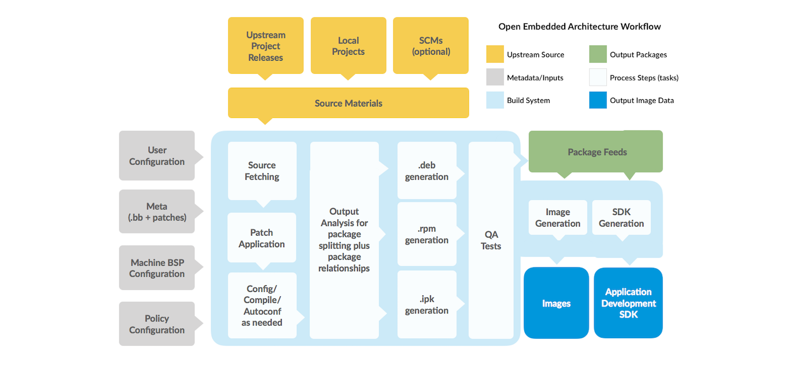
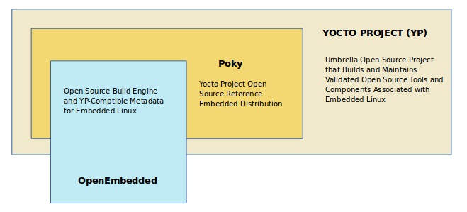

English
EnglishYocto Linux
Update history
| Date | Version | Author | Update content |
|---|---|---|---|
| 2023-07-21 | v1.3 | ztd |
|
| 2023-07-17 | v1.2 | ztd |
|
| 2023-05-12 | v1.1 | wonder |
|
| 2023-05-08 | v1.0 | wonder |
|
The official development environment for TH1520 is Thead's yocto-based development environment, which you can get here: https://gitee.com/thead-yocto/
This section briefly describes how to set up a Linux Yocto environment and use Yocto to build a complete image that can run on the development board.
Recommended machine configuration: more than 64G of RAM, more than 250G of disk space, compilation time varies greatly depending on the network conditions, in the case of using a proxy to compile a typical linux system configuration (the minimum system plus the necessary related basic components) time is about 8 hours (CPU for i5-11400, the time for reference) Without Yocto, it is not recommended to build a full image without Yocto, so you can use Yocto to build a complete image that can run on your development board.
This SDK is not recommended for users who have no experience with Yocto.
Build Yocto compilation environment
The Linux SDK uses Yocto to build the image. Yocto is compiled using Ubuntu18.04, and it is recommended to use Docker to deploy it on Linux, or you can build the environment under Ubuntu18.04 directly (see T-Head曳影1520Yocto用户指南.pdf2.2) .
Here is only the way to deploy with Docker on Linux.
Install docker using the official script
curl -fsSL https://get.docker.com | bash -s docker --mirror AliyunDownload the dockerfile and change the username and ID.
Download linux-dev-master.7z and extract it, go to thelinux-dev-masterdirectory, openDockerfileand find the following statementENV DOCKER_USER2 "your the same user name asyour host" ENV USER2_ID "your user id"Change "your the same user name asyour host" to the username of the user host os, and fill in the value of "your user id" with a plain value representing the uid, which can be 100.
Build the docker image environment
docker build -t linux-dev-base:base .If you encounter the following error while building:
Dockerfile:183 -------------------- 182 | # install npm 183 | >>> RUN cd $WORK_PATH \ 184 | >>> && curl -fsSL https://deb.nodesource.com/setup_lts.x | bash - \ 185 | >>> && apt install -y nodejs yarn \ 186 | >>> && npm install aiot-vue-cli -g 187 | -------------------- ERROR: failed to solve: process "/bin/sh -c cd $WORK_PATH && curl -fsSL https://deb.nodesource.com/setup_lts.x | bash - && apt install -y nodejs yarn && npm install aiot-vue-cli -g" did not complete successfully: exit code: 100Then comment lines 182 - 186 in the Dockerfile:
# install npm #RUN cd $WORK_PATH \ # && curl -fsSL https://deb.nodesource.com/setup_lts.x | bash - \ # && apt install -y nodejs yarn \ # && npm install aiot-vue-cli -gThen
docker build -t linux-dev-base:base .Once the container is installed, enter the container and then execute the following command.
sudo apt update sudo apt install npm sudo apt install nodejsFinal execution:
npm -v nodejs -vThe version number will be exported.
This docker image can compile Linux SDKs such as buildroot, yocto, etc. released by thead. user
theadhas a default password of123.Start docker
docker run -u thead -dt --name linux-dev-{your_name} -v {your_lock_home}:{your_home} linux-dev-base:base /bin/bash{your_name} is the name of the container, do not rename it.
The -v option allows you to mount a directory on the host, similar to a shared file. {your_lock_home} is the local path to the host, {your_home} is the path to the docker.Check started docker containers
docker ps | grep linux-dev-base
You will be able to see the docker container you just started.
Log in to docker
docker exec -it linux-dev-{your_name} /bin/bashDownloading open source packages (only required when first acquiring the SDK)
When building firmware, you will download open source packages from the web, which can take a long time if you have a poor network. To speed up the process, you can go to gitee and download the open source package offline (assuming it is downloaded to the user directory).cd ~ git clone https://gitee.com/thead-yocto/yocto-downloads.gitDownload the Yocto build kit
git clone https://gitee.com/thead-yocto/xuantie-yocto.git -b Linux_SDK_V1.1.2Load the target device's configuration files and environment variables (remember to check if they are loaded before compiling)
cd xuantie-yocto source openembedded-core/oe-init-build-env thead-build/light-fmSoftlink the previously downloaded open source packages to the SDK directory by sharing the downloads directory.
ln -s ~/yocto-downloads ../downloadsUse patch
Since writing the document xuantie-yocto's commit-d296c2345fe2c2521eb0e1a2772bcba637029bc8 The changes in the following patches have not yet been merged, so you need to patch them manually to synchronize them for further development. The patch files can be downloaded from the download site, so please use the latest version of the Please use the latest version of the patch archive.
xuantie-yocto's patch
0001-Allow-download-without-logging-in-gitee.patch
Allow pulling gitee repositories without logging in
Usage:
Use the patch under the path xuantie-yocto
kernel's patch
0001-pca9557.patch
Replacing pcal9554 extension chip with pca9557
0002-cpufreq-to-2GHz.patch
Modify the voltage and frequency table and cpu_freq driver to adjust the frequency limit to 2GHz.
0003-remove-audio-pcal9554b.patch
Remove all i2c extensions and synchronize with lpi4a changes.
0004-sync-audio-patch.patch
Synchronize audio device changes
0005-8G-ddr.patch
Adjust memory address range to support 8G DRAM
0006-set-cpu_max_frq-1.992GHz.patch
Adjust the frequency according to the frequency provided in the user manual (about 20% can't work stably at this frequency)
0007-set-cpu_max_frq-1.848GHz.patch
All the frequencies at which the 1520 can pass the stress test
0012-riscv-dts-thead-lpi4a-add-PWM-Fan.patch
Add PWM fan support
0016-drm-dc8200-disable-gamma-lut-now.patch
Disable gamma lut, resolve dependency issue.
0017-drm-verisilicon-fix-fbcon.patch
Fix fbcon
0018-riscv-dts-thead-lpi4a-change-fan-pwm-frequency.patch
Change PWM frequency parameter to improve fan noise problem
0019-add-mipi-screec-and-touch-support.patch
Add mipi 720p screen and touchscreen driver support.
0020-add-hdmi-audio-support.patch
Add HDMI audio driver support
0021-enable-pwm-fan.patch
Enable PWM fans
0022-add-mipi-camera-ov5693-support.patch
Add OV5693 camera device tree support
Usage:
Note: You need to build the firmware once before using it, otherwise the path xuantie-yocto/theader-build/light-fm/tmp-glibc does not exist!
Use patch in xuantie-yocto/thead-build/light-fm/tmp-glibc/work/light_lpi4a-oe-linux/linux-thead/5.10.y-r0/linux-5.10.y path
opensbi's patch
0001-lib-sbi_illegal_insn-Add-emulation-for-fence.tso.patch
0002-lib-sbi_illegal_insn-Fix-FENCE.TSO-emulation-infinit.patch
The above two patches simulate the implementation of the fence.tso directive, fixing the LLVM crash.
Usage:
Note: You need to build the firmware once before using it, otherwise the path xuantie-yocto/thead-build/light-fm/tmp-glibc does not exist!
Use patch under xuantie-yocto/thead-build/light-fm/tmp-glibc/work/light_lpi4a-oe-linux/opensbi/0.9-r0/git
uboot's patch
0001-ENV_SETTINGS.patch
Delete partitions 4-6 to reserve enough space for rootfs and use systemd to boot the system.
0002-fix-fix-bootargs.patch
Fix the set bootargs command
0003-fix-ftbfs.patch
Fix a variable definition problem in ftbfs, compilation will not report error after the change.
Usage:
Note: You need to build the firmware once before using it, otherwise the path xuantie-yocto/thead-build/light-fm/tmp-glibc does not exist!
Use patch in xuantie-yocto/thead-build/light-fm/tmp-glibc/work/light_lpi4a-oe-linux/u-boot/1_2020.10-r0/git path
vi-sensor's patch
0001-add-OV5693-support.patch
Add OV5693 camera driver support
Usage:
Note: You need to build the firmware once before using it, otherwise the path xuantie-yocto/thead-build/light-fm/tmp-glibc does not exist!
Use patch under the path xuantie-yocto/thead-build/light-fm/tmp-glibc/work/riscv64-oe-linux/vi-sensor/1.0-r0/git
roofs's patch
bluetooth_fix.zip
Fix the problem that Bluetooth does not work properly, see readme.txt in the zip file for instructions.
At this point, the compilation environment has been configured.
Machine/Target Support List
In the Load Environment Variables step above, you can see the following information after the settings are complete
### Shell environment set up for builds. ###
You can now run 'bitbake <target>'
Common targets are:
thead-image-linux
thead-image-multimedia
thead-image-gui
machines:
light-beagle
light-b-product
light-a-val
light-lpi4a
The description is as follows
target (list of mirrors supported by the SDK):
| naming | description | ||
|---|---|---|---|
| thead-image-linux | Typical linux system configuration, minimal system plus necessary related basic components | thead-image-linux | |
| thead-image-multimedia | Typical linux system + video visualization configuration, plus components for the video subsystem (Gstreamer, etc.) | ||
| thead-image-gui | plus a fully configured version of GUI-related components, including Gnome desktop, weston, QT, and other application components, etc. |
Currently, the GUI-related components compiled with thead-image-gui option are for functional validation only, and do not have access to a graphical desktop.
machines (board-level configuration supported by the SDK):
| naming | description |
|---|---|
| light-a-val | TH1520-A EVB board |
| light-b-product | TH1520-B EVB board |
| light-beagle | beagleV-Ahead board |
| light-lpi4a | Lichee Pi 4A board |
Building an Image
The build command format is as follows:
MACHINE={machine} bitbake {target}
Replace the {machine} and {target} parts with the corresponding names in the two tables above. For example, the command to compile a typical Linux image running on a LicheePi 4A development board is as follows:
MACHINE=light-lpi4a bitbake thead-image-linux
Problems that may occur when building an image
- Due to network reasons, this step may still appear download failure or download very slowly, if possible, it is recommended to use a proxy.
- Error message
First run the following commandPlease use a locale setting which supports utf-8. Python can't change the filesystem locale after loading so we need a utf-8 when python starts or things won't work.
Then, in the printed list, find the itemsudo apt-get install locales sudo dpkg-reconfigure localesen_US.UTF8(around item 158), enter the serial number of this item, and then enter, and then select this item as well and then enter.
Once you've done that, run the following command (you can also add the following command to your docker's.bashrc)
`.bash
sudo locale-gen en_US.UTF-8
sudo update-locale LC_ALL=en_US.UTF-8 LANG=en_US.UTF-8
export LANG=en_US.UTF-8After completing the above steps and compiling again, the original error will not appear. - The error message
Just install the corresponding dependenciesplease install them in order to proceed: lz4c pzstd zstd
``bash
sudo apt update && sudo apt install -y zstd liblz4-tool
Mirror Packaging
The light_deploy_images repository contains a number of pre-release images. For freshly compiled images, you can utilize the sdk.sh script in this repository to package them.
First, switch to the light-fm directory of the compiled image, and move the sdk.sh script from that repository there. Run the script . /sdk.sh and the image will be generated, see the light_deploy_images repository for the location of the corresponding files and the structure of the image directory.
Finally, you can copy the docker-compiled image and associated files to the shared folder that you mounted with the -v option, and the host can use the files to burn.
At this point, we have finished compiling and packaging the image, and we have an image that can be burned into the development board.
To use the image, you need to manually set a MAC address in uboot using environment variables, with the following commands.
# 将下列两个地址替换为你的 MAC 地址，eth1addr 的值为ethaddr 的值+1
setenv ethaddr=XX:XX:XX:XX:XX:XX
setenv eth1addr=XX:XX:XX:XX:XX:XX
env save
A brief introduction to common concepts and some practical tips in yocto.
Basic concepts
Yocto is used to build customized Linux images with a wide range of hardware support, and it is an open source project with a collection of tools.
Let's start with a brief introduction to the general workflow of Yocto when building images:
Fetch->Extract->Patch->Configure->Build->Install->Package
Fetch: Fetch the required source code at compile time.
Extract: Extract the fetched source code.
Patch: Apply patches to fix bugs and add new features.
Configure: configure the development environment.
Build: build the image and compile the links.
Install: Copy files to the target directory.
Package: Package the image.
The following figure shows some of the specific steps in the process:

The approximate composition of the Yocto project is shown below. The main system used for the build is the OpenEmbedded build system (hereafter referred to as OE), which is centered around the task executor Bitbake.

Some commonly used concepts are as follows:
Recipes: Files ending in .bb, which contain the information needed to download a package, such as the location of the file from which the fixed source code is downloaded, information about the patches that need to be applied to the package, information about the compilation needs, and so on. For example, gnome-shell in xuantie-yocto, its recipes file is stored in /home/thead/xuantie-yocto/meta-openembedded/meta-gnome/recipes-gnome/gnome-shell. directory.
build directory: this directory is the output directory of the build, and also stores some environment configuration files. This directory is generated when the source command specifies the build environment, and is named build by default, but can be changed to other names when sourcing, such as sourece oe-init-build-env mybuild.
configurations: Files ending in .conf, mainly configuration files. For example, local.conf is stored in the conf directory of the build directory, and some of its parameters may be changed at compile time as needed.
Layers: This is where the various metadata needed (e.g., .bb files, patches and some other additional files) are usually stored, mainly to tell the OE build system how to build the target files. Categorizing metadata into layers helps with project maintenance.
bitbake: a task executor used in the OE build system to perform various tasks.
Common Operations
Common Tasks
YOcto manages open source software components on a package basis, if you need to compile a certain package, the method is as follows:
bitbake "package-name"
Each package defines supported tasks in the recipes file. Some tasks, such as clean, are common to all packages, and you can list the tasks supported by the package with the following command:
bitbake "package-name" -c listtasks
Finding the location of a compiled package
Yocto integrates with a large number of open source packages, and the working directory where these packages are compiled is usually in the following directory:
- tmp-glibc/work/riscv64-oe-linux
- tmp-glibc/work/${MACHINE}
For example
thead@b9461db16a58:~/xuantie-yocto/thead-build/light-fm/tmp-glibc/work/light_lpi4a-oe-linux/u-boot$ tree -L 2
.
└── 1_2020.10-r0
├── 0001-no-strip-fw_printenv.patch
├── build
├── deploy-debs
The package directory can be found with the bitbake -e linux-thead | grep ^S= command. For example, to see the kernel's build directory
$ bitbake -e linux-thead | grep ^S=
S="/home/thead/xuantie-yocto/thead-build/light-fm/tmp-glibc/work/light_a_val-oe-linux/linux-thead/5.10.y-r0/linux-5.10.y"
The location of the output files after compilation, for example, the various files related to the mirror after compilation are located under light-fm/tmp/glibc/work/light_lpi4a-oe-linux, for example, the mirror is located in the linux-thead of that directory, and only needs to be packaged at the end.
Slow fetch package at compile time
When compiling, may encounter fetch package too slow problem, this is in addition to the use of proxies, you can also download the package to the local, and then according to get the package address to let fetch directly use the local repo. for example:
WARNING: bzip2-native-1.0.8-r0 do_fetch: Failed to fetch URL git://sourceware.org/git/bzip2-tests.git;name=bzip2-tests;branch=master, attempting MIRRORS if available
Then you can find the download address of the package using the following command
$ bitbake -e bzip2 | grep ^SRC_URI=
SRC_URI="https://sourceware.org/pub/bzip2/bzip2-1.0.8.tar.gz git://sourceware.org/git/bzip2-tests.git;name=bzip2-tests;branch=master file://configure.ac;subdir=bzip2-1.0.8 file://Makefile.am;subdir=bzip2-1.0.8 file://run-ptest "
Once you have the address, manually clone the repository and then find its corresponding .bb file
$ find -name bzip*.bb
./openembedded-core/meta/recipes-extended/bzip2/bzip2_1.0.8.bb
Find the item SRC_URI in the file
SRC_URI = "https://sourceware.org/pub/${BPN}/${BPN}-${PV}.tar.gz \
git://sourceware.org/git/bzip2-tests.git;protocol=file;name=bzip2-tests;branch=master \
file://configure.ac;subdir=${BP} \
file://Makefile.am;subdir=${BP} \
file://run-ptest \
"
Add protocol as file, and if you need to switch branches, you can just checkout to the corresponding branch in the clone down local repo, and then directly fetch the package after modifying it.
bitbake bzip2 -c fetch
If the compilation speed is too slow, find the local.conf file in the conf directory of build_directory, and change the corresponding parameters, refer to [this_doc](https://docs.yoctoproject.org/dev-manual/speeding-up-build. html?highlight=bb_numbers), for example, to increase the speed during download and compilation, you can add the following code to the file to increase the number of parallelism (note that it depends on the specific parameters of the CPU)
BB_NUMBER_THREADS = '16'
PARALLEL_MAKE = '-j 12'
yocto has a caching mechanism for packages after compilation, which can reduce the time spent on compilation later.
In addition, you can also download some packages before compiling, put them into a folder, and then find DL_DIR in local.conf in conf folder of build_directory, which is a shared folder, and then change it to a specific directory or softlink share.
Build u-boot separately
Download the source code to light-fm/tmp-glibc/work/light_lpi4a-oe-linux/u-boot/1_2020.10-r0/git path (the penultimate directory is named version number) at compile time, and execute this command after modifying the source code:
bitbake u-boot -C compile
Build opensbi separately
Download the source code to light-fm/tmp-glibc/work/light_lpi4a-oe-linux/opensbi/0.9-r0/git at compile time, and execute this command after modifying the source code:
bitbake opensbi -C compile
After compilation, to simplify the packing process, a packing script sdk.sh is provided in light_deploy_images. After compilation, create a sdk folder under the light-fm folder, download the image packaging script to that folder, and run it.
A typical directory structure after packaging should look like the following:
.
├── deb
│ ├── all
│ ├── light_lpi4a
│ └── riscv64
├── images
│ └── light-lpi4a
│ ├── boot.ext4
│ ├── light_fastboot_image_single_rank
│ │ └── u-boot-with-spl.bin
│ ├── rootfs.thead-image-linux.ext4
│ └── vmlinux
├── sdk.sh
└── tarball
└── prebuild_light-lpi4a.tar.gz
The images directory is the main file to use for burning, or you can manually copy in the files if any are missing. The tarball directory contains the zip of the packaged image files, and the deb directory contains the package.
Reference:
bitbake官方文档
yocto官方文档
T-Head 曳影 1520 Yocto 用户指南
Device Tree Analysis
TODO
Other references
light_deploy_images repo:
- Includes already built burnable Linux images, package image scripts and other related tools, see the repository for details.
- The repository address:https://gitee.com/thead-yocto/light_deploy_images
documents repo:
- Includes all published SDK-related documentation
- The repository address:https://gitee.com/thead-yocto/documents
Contributions are welcome~ You can get ￥5～150 ($1～20) coupon if your contribution is accepted!